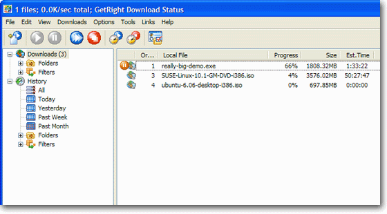
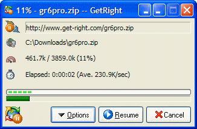

01 / THE ORIGINALWINDOWS, 1997
Before fast internet,
there was GetRight.
A dropped connection didn't have to mean starting over.
Michael Burford released GetRight 1.0 in February 1997. His idea grew out of a familiar frustration: a game demo download that kept getting disconnected.
GetRight became a familiar name on Windows desktops, helping people resume and organize downloads in the dial-up era. The green progress bars, the tray icon, the feeling of finally reaching 100% — that's the part we wanted to bring along.
FROM THE WINDOWS ARCHIVE

